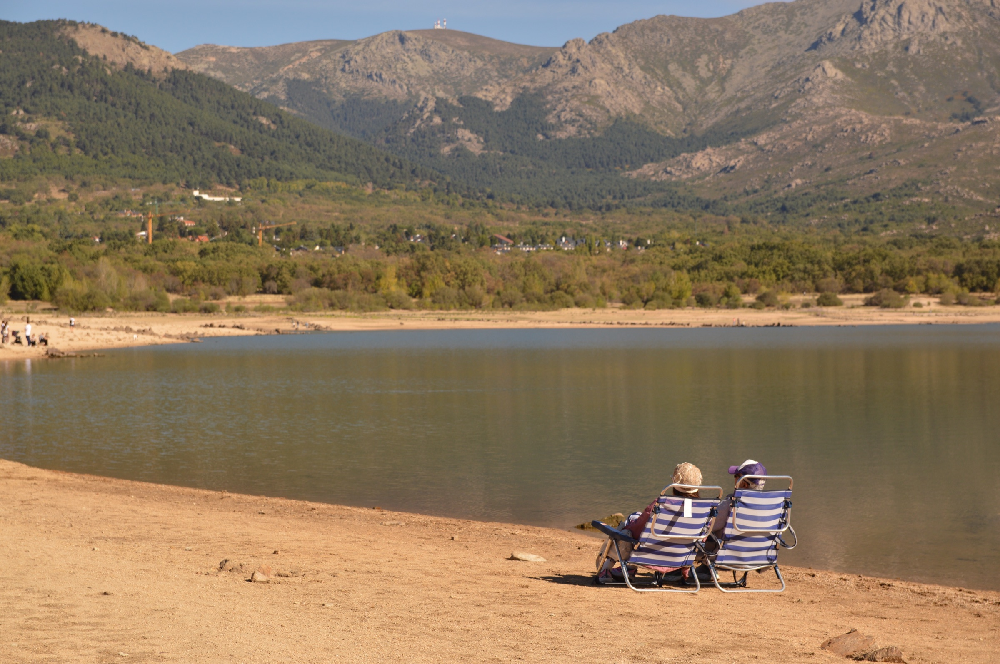
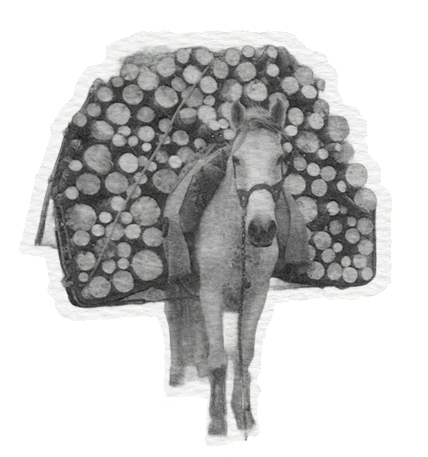
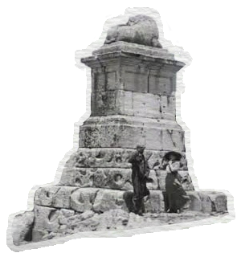

Un lugar para encontrarnos
Mil Guadarramas
y Miles Soles Vienen
Imaginamos un futuro más cercano a la tierra, hecho de pequeños gestos y caminos compartidos.
Conoce quiénes somosRaíces en la sierra, mirada al futuro

Creemos en la fuerza de juntarnos: escuchar el paisaje, compartir saberes y hacer sitio a nuevas formas de vivir en relación con nuestro entorno.
Nuestro punto de partida“Lo que cuidamos en común
puede volver a florecer.”
